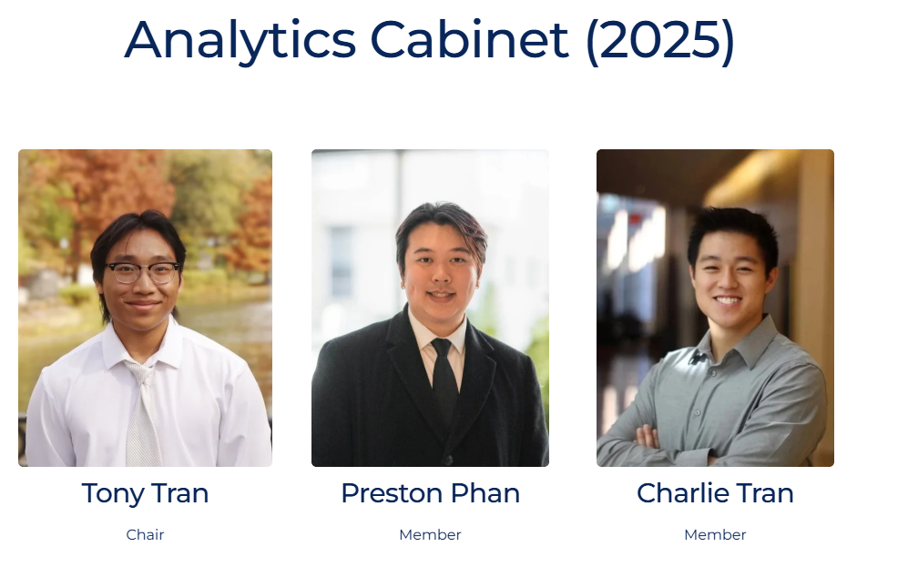

Recent graduate at The Ohio State University | Data Analyst / Scientist
I am a Data Scientist/Analytics student interested in using data to solve real-world problems through analytics, visualization, and machine learning techniques.
I like to work on fun projects and volunteer at a non-profit as a hobby. In my free time, I also like to travel, play video games, excercise, and cook!
I am particularly interesting in data because I think data is the future of the world. With the rise of AI and available data out in the world, I think it is important
now more than ever to build insightful interpretations of data.

I have also dabbled a bit in research as well, where my small team modeled diffusion with random walks. I specifically focused on modeling the
PDF (probability distribution function) of a water molecule's movement in a 2-D space as time passed.
For a full breakdown of our work, feel free to refernce our poster that my team presented at a research conference; I don't want to bore you with the technicals :)
Essentially, we were able to understand the idea of Mesh Parameterization. These application can be used to understand the process behind reaction-diffusion models,
and can be used to predict where a stem will grow out of a plant (via looking at the distribution of water molecules throught time).